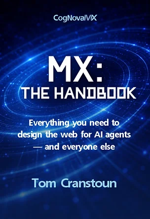
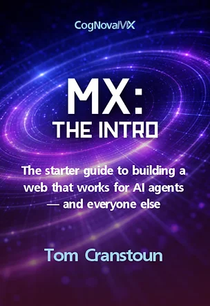

The invisible users are here
AI agents don’t click, don’t scroll, and don’t forgive ambiguity. They parse your HTML, evaluate your metadata, and make decisions in milliseconds. If your content isn’t structured for them, they move on.
Content Ops is the discipline of creating, managing, improving, publishing, distributing, archiving, and retiring content across every digital channel. Machine Experience (MX) is the layer that keeps Content Ops work usable when an AI agent, or any other system, encounters the file outside the environment that produced it.
Videos, podcasts, PDFs, images, web pages: make anything you publish readable by machines.
The web is no longer consumed only by people. AI agents are becoming a new consumption layer for enterprise digital platforms, interpreting, transforming, comparing and acting on information on behalf of users, teams and systems.
That changes what “quality” means. Not just user experience.
When they succeed, they build computational trust and return, recommending you more confidently each time. When they fail, they route around you permanently, no analytics warning, no second chance, no angry email explaining what went wrong.
AI agents don’t click, don’t scroll, and don’t forgive ambiguity. They parse your HTML, evaluate your metadata, and make decisions in milliseconds. If your content isn’t structured for them, they move on.
Machine Experience makes the invisible visible. Understand how agents interpret your pages, where they succeed, and where they fail, before your competitors do.
MX gives you the language, principles, and patterns to design digital systems that machines can read, trust, and act on, reliably, safely, and consistently.
Three books. One discipline. From introduction to full specification.

Everything you need to design the web for AI agents, and everyone else.
PDF £25 · Print £35
ISBN: 978-1-067638-40-5
Get the Handbook
The starter guide to building a web that works for AI agents and everyone else. Read the first chapter before committing.
Free
ISBN: 978-1-067638-41-2
Download FreeThe formal patterns and field-level specifications for an AI-readable web.
PDF £99, Available
ISBN: 978-1-0676384-2-9
Learn MoreHow to structure HTML, metadata, and Schema.org so every AI agent can read your content without executing JavaScript. The served HTML is the product.
Discovery, citation, comparison, pricing, and purchase confidence. Each stage has explicit patterns that determine whether an AI agent recommends you or routes around you.
Content lifecycle metadata, AI agent permissions, data sovereignty, and the MX governance layer that sits on top of established standards.
Practical code patterns for semantic HTML, Schema.org JSON-LD, accessibility, llms.txt, robots.txt, and the full metadata stack.
How to apply MX to content management systems, e-commerce platforms, and digital experience platforms.
How to audit your site against MX principles, benchmark against competitors, and measure the business impact of machine-readable content.
MX is the discipline of designing digital systems so that machines can read, trust, and act, reliably, safely and consistently, across channels, devices and emerging agent platforms.
The invisible users are here. Now you can see them. Now you know how to make sure they can see you.
Get the Books
Online materials, appendices, and supplementary reading for the MX book series.
Two fundamentally different ways machines access your website, and why both demand the same solution.
ReadReferences and footnotes for MX: The Introduction.
ViewPractical guides and reference material for MX: The Protocols, implementation cookbook, case studies, HTML patterns, and more.
BrowseReady to get started? Get the Handbook. Prefer to read a chapter first? Download the free Introduction.